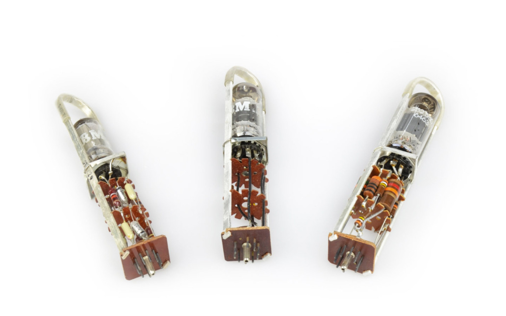
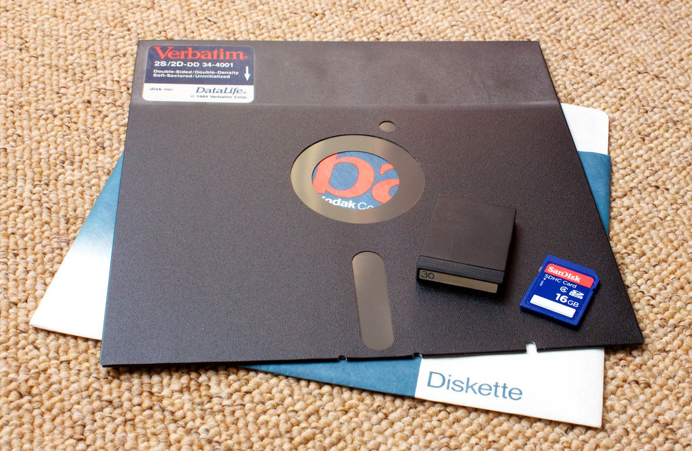
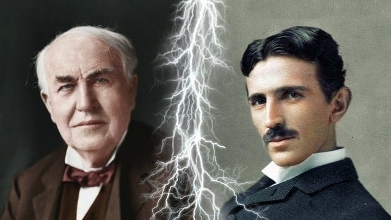

Software
Son represntaciones de conceptos basadas en nuestros conocimientos y experiencias individuales. Son relacionales de acuerdo a el conocimiento de cada individuo y representa basandose en eso, cada individuo tiene una abstración diferente, el desafio existe en poder emitir el mensaje de la manera correcta, se suele segmentar dependiendo del conocimiento de cada individuo.
Hardware
Son medios físicos que almancena software, son aquellos elementos fisicos que sirven para que uan computadora funcione y son el soporte del software.
Firmware
Es programa informatico que establece la lógica de mas bajo nivel, lo mas simple, que controla los circuitos electronicos de un dispositivo de cualquier tipo, esta fuertemente integrado con al lelctronica del dispistivo, siendo ese software que hace la interaccion directa con el hardware, seria el encargado de controlar las interacciones internas y externas.
Durante la tercera
El primer chip se inventa en 1958. la apresecia de estos permite flexibilizar las computadoraas.
Los primeros disckette en 1967
Al final de esta generación, se crearon los disquetes que eran de 8".
Microporcesadores
Entre 1971 y 1981 las computadoras personales se convirtieron en las protagonistas de la informática. Todos los elementos que conforman la CPU ahora se almancenan en un circuito integrado conocido como microprocesadores, es aquí donde todo se empieza a simplificar en tamaño y maximizar la funcionalidad.
 microprocesador IBM 4004
microprocesador IBM 4004
Ventajas.
- Reduccion drastico del consumo.
- Reduccion del tamaño del transistor.
- Aumneta la velocidad de calculo (Nanosegundos).
- Reduccion del tamaño de la maquina.
- Teleprocesos.
Desventajas.
- Se necesitaba gente capacitada para operarlas.
- Eran demaciado costosas.
IBM PC
Durante los 70´, a los lenguajes desarrollados con anterioridad, se les agregan algunos otros.
 B(1969).
c(19720).
B(1969).
c(19720).
Innovaciones
 ATARI(1972).
ATARI(1972).
 Magnabox odyse
Magnabox odyse
 Se crea el primer antivirus (REAPER) y el primer virus.
Se crea el primer antivirus (REAPER) y el primer virus.
Internet (1974)
Se conectan por primera vez, dos redes diferente por medio de un cable, dando origen al termino ethernet.

Aparece microsoft
Fundada por Bill Gates y Paul Allen, ademas que justamente en esta década estalla un arevolución de software.
Aparece Appel
Fundada por Steve Jobs Steve wozniak presenta su primera computadora producida en masa.

Aparece el primer microprocesador
Fabricado por intel, desarrollado en silicom valey, este lugar seria la cuna de las mas importates empresas informaticas.
La llegada del joven prodigio
Nikola Tesla
Soñó con distribuir la energía eléctrica gratis entre la gente, y la influencia de su genio aún se siente en tecnologías como la radio, y las comunicaciones inalámbricas
El inicio de una disputa de luces
Todo comenzo en 1879, Edison presentó en la sociedad la bombilla incandecente con intención de introducir en todos los hogares del país, empezó a investigar un sistema que permitiera suministrar energía para ilumina a Estado Unidos.
Tras ocho años de pruebas y experimentos dio con una solución, la corriente continua, que sustituía al vapor como fuente de energía. Fue un éxito, aunque durante un breve periodo ya que empezaron a notarse los numerosos inconvenientes que el sistema de Edison presentaba.
La llegada de Tesla no le causó una buena impresión a Edison que desde el primer instante vio en el croata una amenaza a su popularidad y su trabajo. Sin embargo, lo contrató para que le ayudase a mejorar su sistema de corriente continua y le prometió a Tesla una recompensa de 50.000 dólares si lo conseguía.
Edison carecía de una educación formal y todos sus inventos se basaban en un método de ensayo, prueba y error. Tesla, en cambio, poseía una sólida formación y era capaz de resolver mentalmente los problemas técnicos que surgían sin recurrir a los experimentos. Las diferencias no tardaron en llegar y se distanciaron.
Pero un año y medio después, Tesla volvió con una solución: se trataba de un sistema de generación y transmisión de corriente alterna que permitía que el voltaje se elevara con un transformador antes de transportarse a largas distancias y, una vez en su destino, se redujera para proporcionar energía con seguridad lo que presentaba muchas ventajas frente a la corriente continua de Edison. De todas formas, Edison desestimó la propuesta y menospreció a Tesla. Incluso se negó a pagarle la recompensa que le había prometido. Tesla se fue furioso y renunció a trabajar nuevamente con Edison.
La comercialización de aquel nuevo sistema de energía supuso el inicio de la “guerra de corrientes”, que enfrentó durante casi una década a Thomas Alva Edison y la General Electric, por un lado, con Nikola Tesla y la Westinghouse Corporation, por otro.
Desarrollo de las computadoras personales.
 A.I.
A.I.
En vista de la acelerada marcha de la microelectrónica, la sociedad industrial se ha dado a la tarea de poner también a esa altura el desarrollo del software y los sistemas con que se manejan las computadoras. Surge la competencia internacional por el dominio del mercado de la computación, en la que se perfilan dos líderes que, sin embargo, no han podido alcanzar el nivel que se desea: la capacidad de comunicarse con la computadora en un lenguaje más cotidiano y no a través de códigos o lenguajes de control especializados. Japón lanzó en 1983 el llamado “programa de la quinta generación de computadoras”, con los objetivos explícitos de producir máquinas con innovaciones reales en los criterios mencionados. Y en los Estados Unidos ya está en actividad un programa en desarrollo que persigue objetivos semejantes, que pueden resumirse de la siguiente manera
Ventajas.
- Mayor velocidad
- Mayor miniaturización de lo elementos
- Aumento de la capacidad de memoria.
- Manejo de lenguaje natural y sistemas de inteligencia artificial.
Desventajas.
IBM PC
La llegada de las computadoras pc, le permite a muchas familias acceder a una computadora, ya que las anteriores opciones son mucho mas caras,+.
MS-DOS

Al ser tan masivas las pc (personal computer) muchas empresas comenzaron a fabricar sus propios software para estas, una de ellas, microsoft, crea el ms-dos, que permitia tener una interface grafica o sistema operativo, que podia ser almacenado en un disckette, con el tiempo paso a estar instalado en la maquina y poder utilizarlo sin la necesidad de un disckette de arranque. Esto le permitio a microsoft instalarse como empresa lider de mercado con este producto, cabe destacar que fue dejado de ultilizar, en 1998 con la llegada de window 98´ (en las versiones anteriores trabajaba con los anteriroes windows).
Ventajas
- Estas podian mantener actualizado mediante servicio técnico.
A.I.
En la sexta generación de computadoras, tiene como aspecto principal, que los ordenadores serán capaces de interactuar físicamente y psicologicamente con las personas, además de implementar actividades cognitivas como ver, oir, hablar, pensar y ser capaces de llegar a concluciones para resolver problemas, como los humanos.
Ventajas.
- El tamaño del dispositivo computacionales son mucho menores.
- El diseño de los dispositivo son muy variables.
- Tienen acceso a internet.
- Poseen reconocimiento por voz.
- Impulsan el comercio.
Desventajas.
- Perdida de la privacidad.
- Obsolecencia acelerado innecesaria de los dispositivos.
- Aislamineto del entorno.
Reconcimiento biometrico.
La identificación biométrica consiste en determinar la identidad de una persona. El objetivo es capturar un elemento biométrico, por ejemplo, tomando una foto del rostro, grabando la voz, o capturando una imagen de la huella dactilar.
Los principales avances en biometría se dieron en el siglo XX, incliudo el uso de patrón de imprimiesen de los ojos y la lectura de la manto para identifica a la persona.
En 1903 La Comision de Administración pública de la ciudad de Nueva York comenzó a tomarhuellas dactilares para evitar que las pruebas de contratación se falsificaran.
En 1993 FERET (Evaluación de tecnología de Reconcimiento Facial), que operó del 93´al 97´, Evaluación los prototipos de reconocimiento dacial y lanzó sistemas de transferencias de datos al sector comercial.
Wifi
 Wifi
Wifi
Hady Lamarr presentó en 1941 "sistema de comunicación secreto"
la patenete de lo que hoy conocemos como wifi. Este sistema de comunicación esta
basasdo en 88 teclas de un piano y era
capaz de enviar laas escuchas del enemigo.
Ideó un sistema que transmitía mensajes fraccionados en pequeñas partes, cada
una de las cuales se transmitiría secuencialmente
cambiando de frecuecia cada vez, siguiendo un patron pseudoaleatorio.
De esta forma, los tiempos de transmisión en cada frecuencia eran tan cortos y estaban espaciados de forma tan irregular que era prácticamente imposible recomponer el mensaje si no se conocía el código de cambio de canales.
Litio
 bateria de litio
bateria de litio
A fines de la década de 1970, M. Stanley Whittingham fue el primero en describir el
concepto de baterías recargables de iones de litio, un logro por el que compartiría el
Premio Nobel de Química de 2019. Sin embargo, ni siquiera él podría haber anticipado los
complejos desafíos de la ciencia de los materiales que surgirían a medida que estas
baterías llegaran a alimentar los dispositivos electrónicos portátiles del mundo.
Desde la primera comercialización de un acumulador basado en la tecnología Li-ion a
principios de los años 1990, su uso se ha popularizado en aparatos como teléfonos
móviles, tabletas, ordenadores portátiles y altavoces inalámbricos.
Sin embargo, su rápida degradación y sensibilidad a las elevadas temperaturas, que
pueden resultar en su destrucción por inflamación o incluso explosión, requieren, en su
configuración como producto de consumo, la inclusión de dispositivos adicionales de
seguridad, resultando en un coste superior que ha limitado la extensión de su uso a
otras aplicaciones.
A principios del siglo xxi, en el contexto de la creciente carestía de combustibles
derivados del petróleo, la industria del automóvil anunció el desarrollo, proliferación
y comercialización de vehículos con motores eléctricos basados en la tecnología de las
baterías de iones de litio, con los que se pueda disminuir la dependencia energética de
estas fuentes a la vez que se mantiene baja la emisión de gases contaminantes.